ตั้งค่าข้อมูลหลัก จัดการผู้ใช้ โครงการ และสิทธิ์การเข้าถึง — ทำก่อนทีมเริ่มใช้งานระบบ
Master Data คือรายการครุภัณฑ์ทั้งหมดในระบบ ทุกหน้าในระบบอ้างอิงข้อมูลจากที่นี่ ต้องตั้งค่าก่อนสร้างรอบแผนเสมอ
หน้า Master Data มี 3 แท็บ:
| แท็บ | ใช้ทำอะไร |
|---|---|
| รายการอุปกรณ์ | ดูรายการครุภัณฑ์ทั้งหมด, เพิ่ม/แก้ไข/ลบรายการ |
| ตั้งค่าหมวดหมู่ | กำหนดกลุ่มครุภัณฑ์สำหรับกรอง |
| Remaining Stock | อัปเดตสต็อกคลังกลางเป็นชุด (Bulk) |
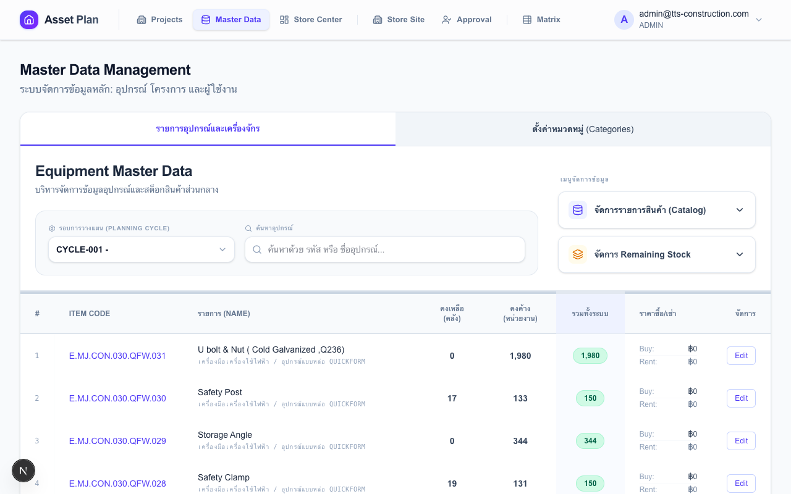
หมวดหมู่ใช้สำหรับกรองรายการในหน้า Site Worksheet และ PM Review — ตั้งค่าก่อนเพิ่มครุภัณฑ์จะทำให้จัดกลุ่มได้ทันที
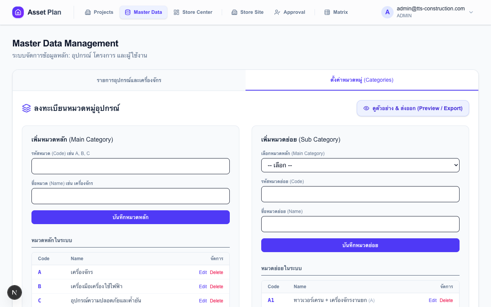
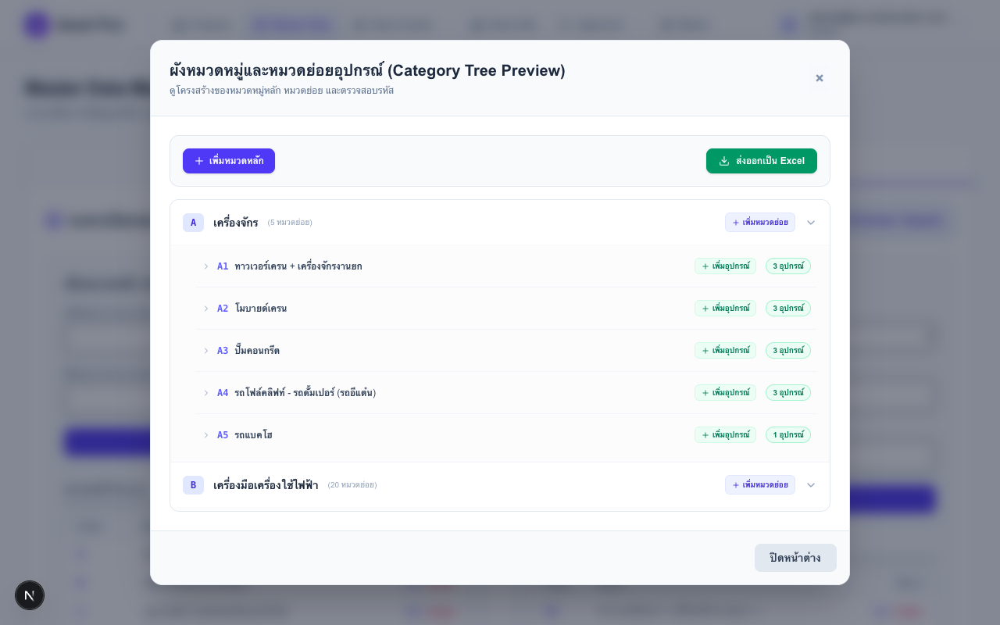
มี 2 วิธี — เพิ่มทีละรายการ หรือนำเข้าครั้งละหลายรายการ
วิธีที่ 1 — เพิ่มทีละรายการ:
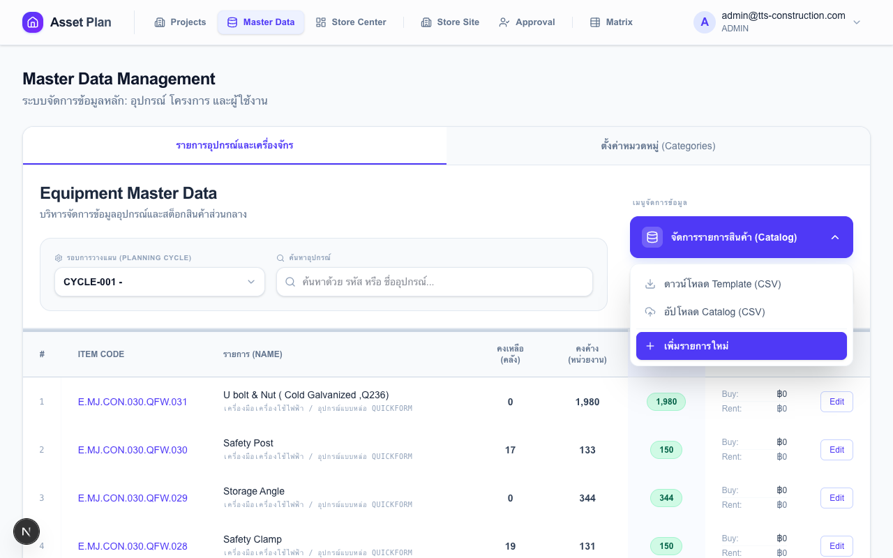
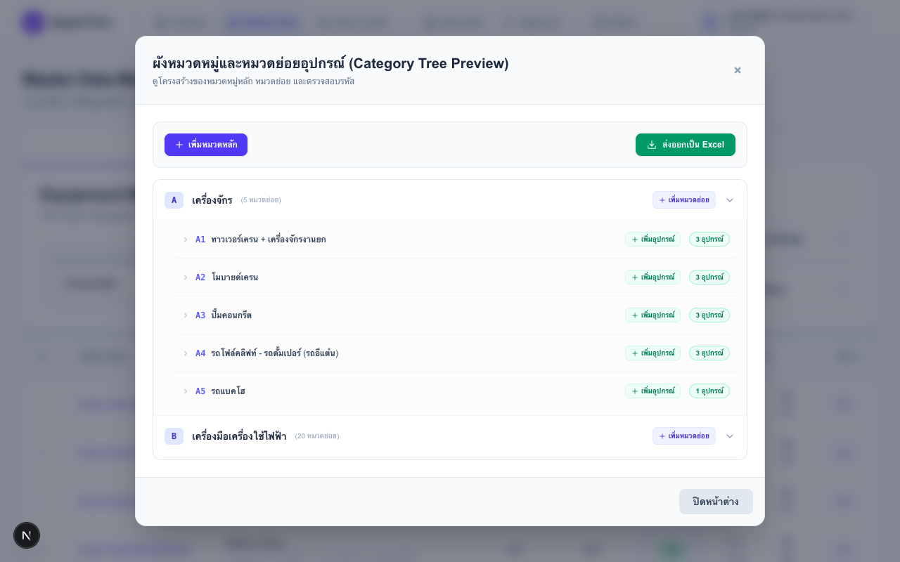
วิธีที่ 2 — นำเข้าจาก CSV (Bulk Import):
Remaining Stock คือจำนวนที่คลังกลางมีอยู่ปัจจุบัน — ค่านี้แสดงใน Center Dashboard และใช้คำนวณความต้องการสุทธิ
อัปเดตด้วย CSV (วิธีเดียวที่รองรับ Bulk):
remaining_stock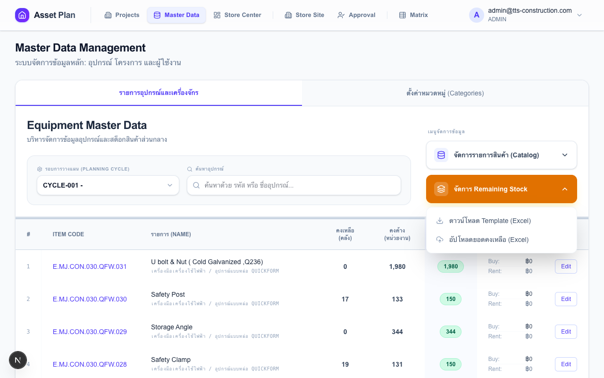
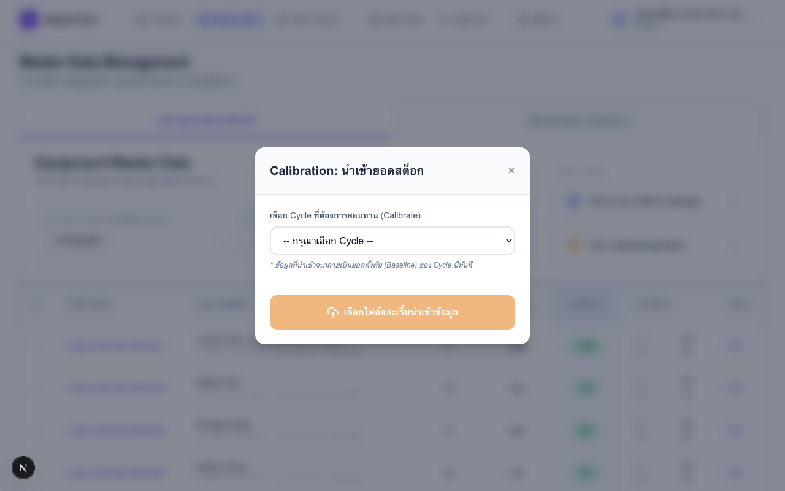
โครงการคือหน่วยงานหลักในระบบ ทุก Planning Job ผูกกับโครงการ ต้องสร้างโครงการก่อนกำหนดสิทธิ์ผู้ใช้
สร้างโครงการใหม่:
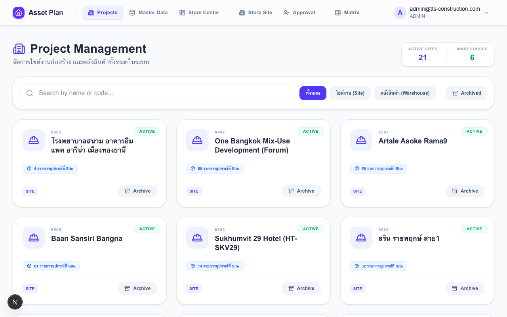
กรองและค้นหาโครงการ:
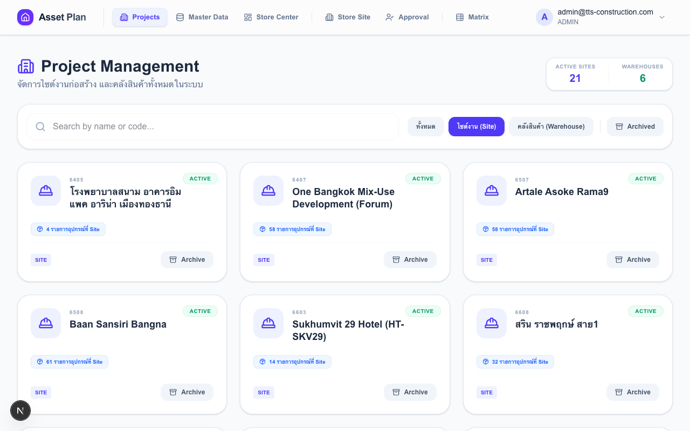
Archive โครงการที่เสร็จแล้ว:
โครงการที่ Archive ยังมีข้อมูลทั้งหมดอยู่ครบ — แค่ซ่อนออกจากรายการปกติเพื่อไม่ให้รก ดูย้อนหลังได้เสมอ
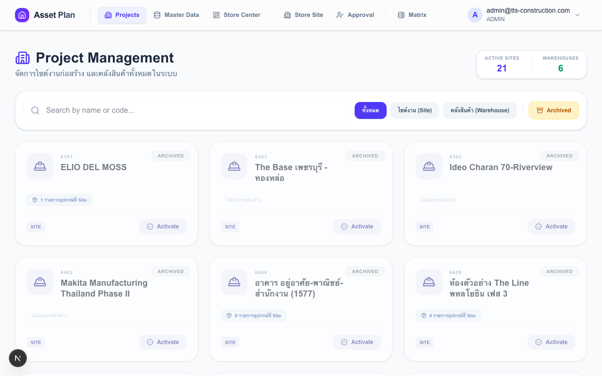
ผู้ใช้ทุกคนต้องมีบัญชีในระบบก่อนเข้าใช้งาน — Global Role กำหนดหน้าที่เข้าถึงได้ทันที
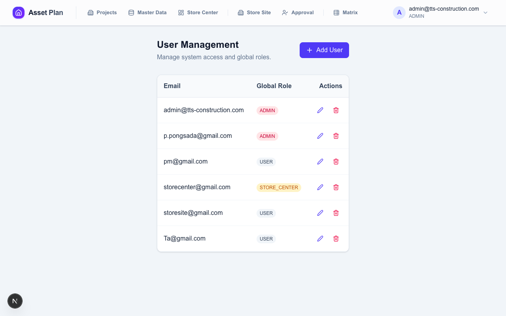
สร้างผู้ใช้ใหม่:
| Global Role | เข้าถึงได้ | ใช้สำหรับ |
|---|---|---|
| USER | เฉพาะหน้าที่ได้รับ Project Role กำหนด | พนักงานไซต์, PM — ต้องกำหนด Project Role เพิ่ม |
| STORE_CENTER | Store Center + Reports | เจ้าหน้าที่คลังกลาง |
| ADMIN | ทุกหน้าในระบบ | ผู้ดูแลระบบเท่านั้น |
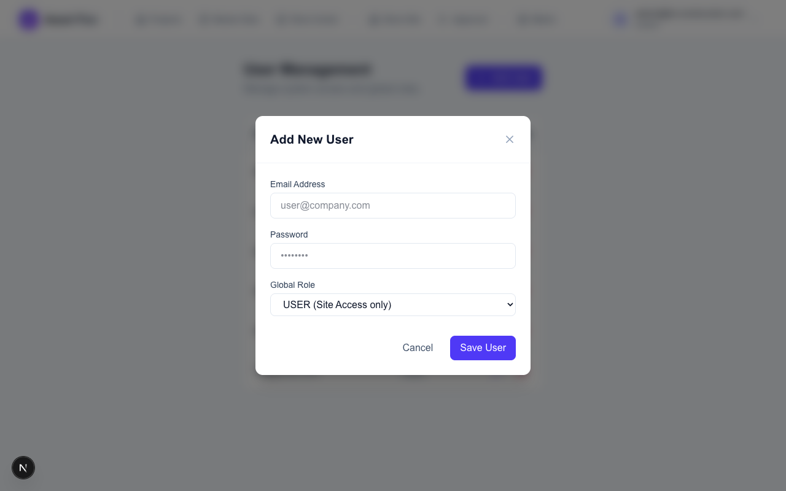
แก้ไขข้อมูลผู้ใช้: กดไอคอน ✏️ ข้างชื่อ → แก้ Email หรือ Password ได้ (ปล่อย Password ว่างถ้าไม่ต้องการเปลี่ยน)
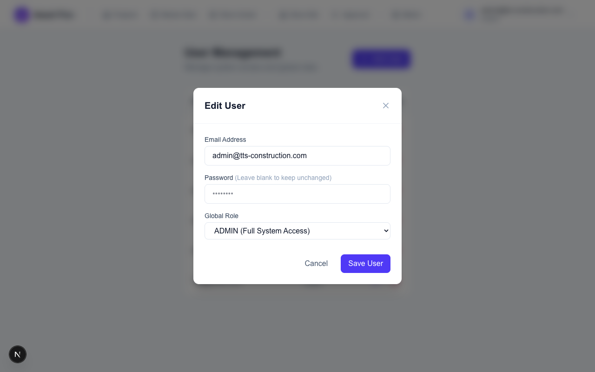
Project Role กำหนดว่าผู้ใช้ที่มี Global Role = USER สามารถทำอะไรได้ในโครงการใด ผู้ใช้ 1 คนมีได้หลาย Role ในหลายโครงการ
3 Project Roles:
| Role | สิทธิ์ในโครงการนั้น |
|---|---|
| STORE_SITE | กรอก แก้ไข และ Submit แผนความต้องการได้ |
| PROJECT_MANAGER | ตรวจสอบ แก้ตัวเลข อนุมัติ หรือตีกลับแผน |
| VIEWER | ดูข้อมูลได้อย่างเดียว — ปุ่มแก้ไขทั้งหมดซ่อน |
วิธีกำหนด Role:
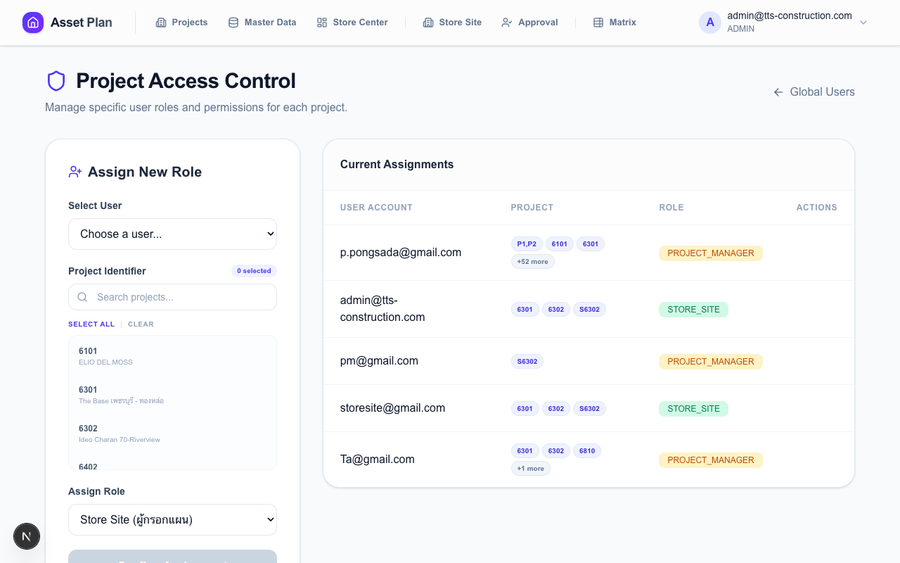
อ่านตาราง Assignment ที่มีอยู่:
ทุก Role เข้าถึงข้อมูลส่วนตัวผ่าน Avatar Button มุมขวาบนของ Navbar
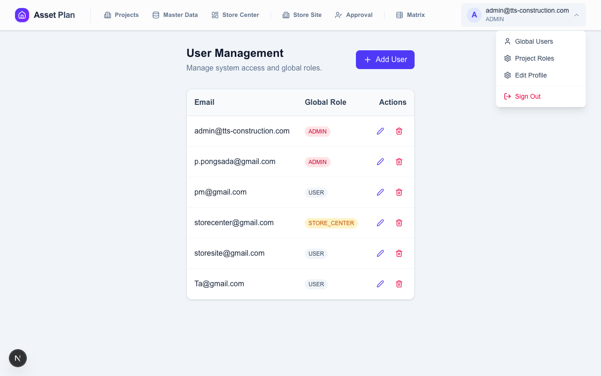
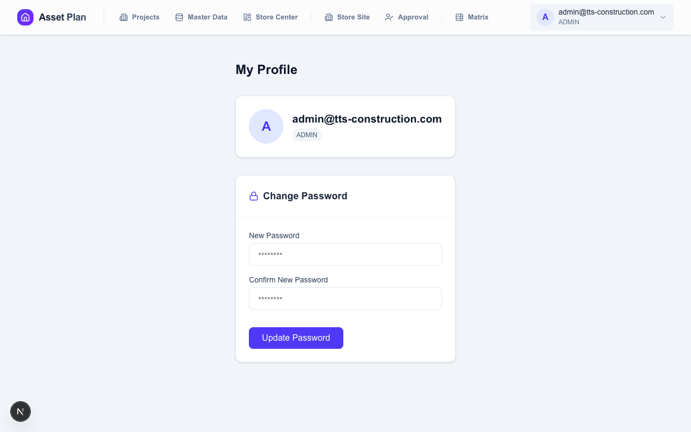